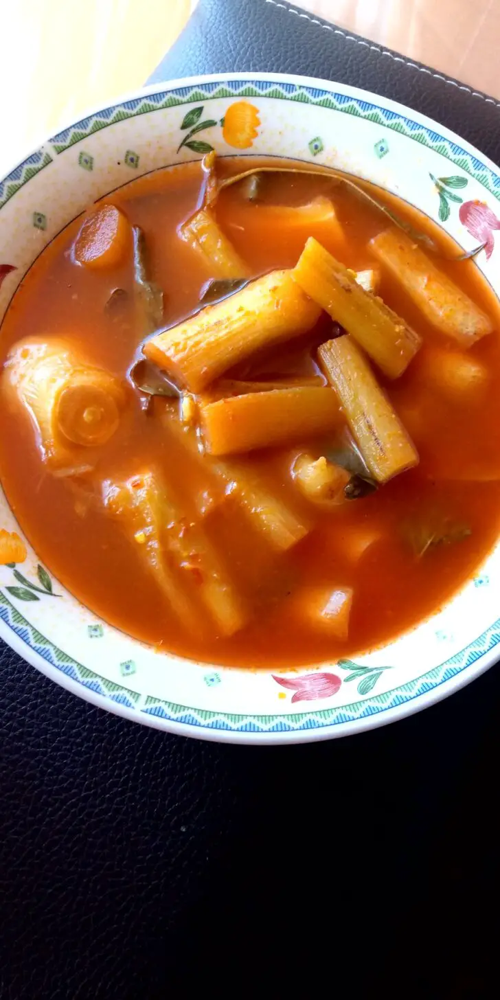

Asam Pedas Batang Keladi

Asam Pedas dikatakan terkenal di negeri Johor dan Melaka. Perkongsian kali ini akan membawa kepada anda asam pedas menggunakan batang keladi, berikut adalah bahan-bahan yang diperlukan.
Bahan-bahan
- 1 mangkuk sayur keladi - disiang, direbus dengan garam dan asam keping
- 10 tangkai cili kering
- 1 biji bawang besar
- 2 ulas bawang putih
- 1 keping asam keping saiz besar
- Garam
- Perasa
- Gula
- Daum kesom
Kaedah
- Mula-mula kisar cili kering, bawang merah dan bawang putih
- Masukkan sayur keladi tadi dalam periuk
- Masukkan bahan kisar ke dalam periuk yang ada sayur keladi tu
- Masukkan air secukup,garam, serbuk perasa, gula, ikan bilis, hirisan bawang merah dan daun kesom
- Masak hingga mendidih
- Padam kan api dan sedia untuk dihidang dengan nasi panas.